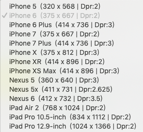
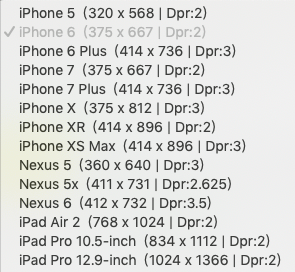

2019/11/11
Author: guoqzuo
移动端屏幕尺寸大小
在开发中，我们一般需要知道常用手机型号的屏幕尺寸，这样才能更好的适配移动端，下面来看看小程序开发工具中提供的各个手机型号尺寸

一般我认为比较标准的是 iphone 6/7/8
对于全面屏来讲，宽度和 ihpone 7/8 一致，但页面长度却长很多，一般 高度 / 宽度 >=2 的就是全面屏，页面布局需要特殊处理下
在开发中，我们一般需要知道常用手机型号的屏幕尺寸，这样才能更好的适配移动端，下面来看看小程序开发工具中提供的各个手机型号尺寸

一般我认为比较标准的是 iphone 6/7/8
对于全面屏来讲，宽度和 ihpone 7/8 一致，但页面长度却长很多，一般 高度 / 宽度 >=2 的就是全面屏，页面布局需要特殊处理下